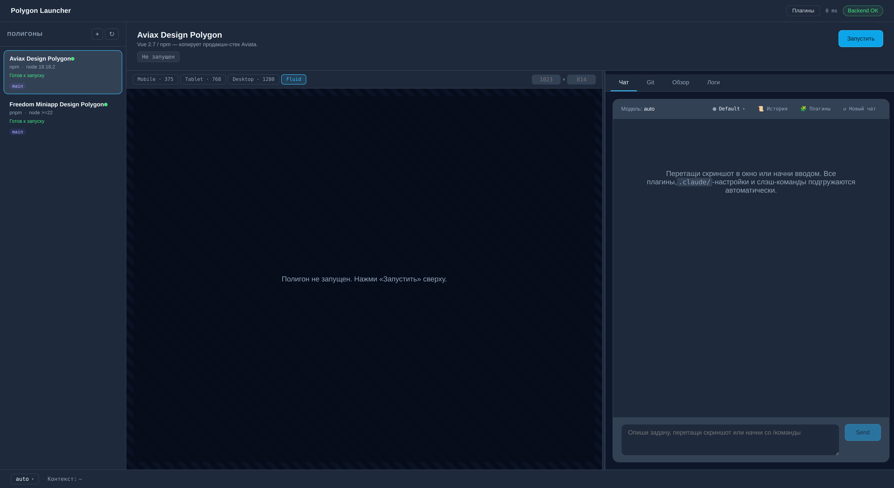

Дизайн-полигоны и Polygon Launcher
Новый формат работы дизайнера и фронтендера на базе Claude Code: дизайнер собирает продакшн-готовую верстку в песочнице, разработчик переносит её в боевой проект. Универсальный подход для любого фронтенд-стека.
Что это и зачем
Идея в одном предложении: дизайнер собирает верстку напрямую в коде с помощью Claude в специально подготовленной песочнице — «дизайн-полигоне», — а разработчик переносит готовое в продакшн, минуя ручную перепечатку из Figma в JSX/Vue.
📦 Меньше дублирования
Один артефакт вместо «Figma + код». Дизайнер сразу видит результат в браузере и итерирует.
🎯 Согласованность токенов
Запрет дефолтных Tailwind-цветов и произвольного spacing — на уровне инфраструктуры.
⚡ Разгрузка фронта
70% монотонной верстки уходит в полигон. Фронт занимается логикой, API, перформансом.
Почему именно в 2026. Claude (Sonnet 4.6 / Opus 4.7) при правильно
подготовленном контексте — .claude/rules, агенты, hooks — стабильно собирает
верстку по конвенциям команды. Это не «иногда получается», это рабочий инженерный процесс.
Дизайнер без технических навыков пишет продакшн-готовый код через диалог на русском.
Экосистема: четыре уровня
Каждый уровень делает одну задачу. Чёткие границы — ключ к тому, что это вообще работает.
Стек для каждого уровня:
| Уровень | Технологии (пример) | Что делает |
|---|---|---|
| Production | React / Vue · TS · TanStack Query · Zustand · Router | Боевой код с реальными данными |
| Дизайн-полигон | React / Vue · TS · Vite · Tailwind · FSD | Только верстка по мокам |
.claude/ | rules.md · hooks.py · agents · commands · ADR | Правила и автоматизация для Claude |
| Polygon Launcher | Electron · React · Agent SDK · simple-git | GUI без терминала |
Pipeline за 30 секунд
От задумки дизайнера до production-деплоя — шесть стадий, единый процесс.
Подробное описание каждого этапа с чек-листами — в гайде для разработчиков и гайде для дизайнеров.
Сколько экономит
Цифры по типовым widget-задачам в реальных продуктовых командах.
Время на типовые задачи
| Задача | До | После | Δ |
|---|---|---|---|
| Карточка отеля / товара / билета | 4–8 ч фронта | 30 мин дизайнера + 50 мин ревью+перенос | −75% |
| Форма поиска / фильтр | 6–10 ч фронта | 1 ч дизайнера + 1 ч ревью+перенос | −75% |
| Попап / шторка | 2–4 ч фронта | 25 мин дизайнера + 30 мин ревью+перенос | −70% |
| Filter chips group | 3–4 ч фронта | 30 мин дизайнера + 35 мин ревью+перенос | −70% |
Что фронт делает с освободившимся временем: бизнес-логика, перформанс, архитектура, нестандартные интеракции, E2E-тесты, менторинг. Всё то, где он действительно нужен.
Polygon Launcher: статус и контакты
Активная обкатка / MVP. Ключевые фичи работают, собирается обратная связь, идут следующие фазы. Можно и нужно пользоваться, можно и нужно сообщать о багах.

Главное окно Polygon Launcher с двумя зарегистрированными полигонами (Aviax, Freedom Miniapp)
✅ Что уже работает
- Чат с Claude через @anthropic-ai/claude-agent-sdk
- Превью dev-сервера с 22 device-пресетами
- Git-панель: status, branches, switch, commit, push
- Slash-палитра
/make-templateи другие - Drag-n-drop Figma-скринов в чат
- Markdown-рендер с подсветкой кода
- Выбор модели и effort (Sonnet/Opus/Haiku × low–max)
- Контекст и rate-limits в statusbar
- Auto-update через GitHub Releases
🚧 В работе
- UI-визард для добавления полигона
- Worktree-изоляция параллельных чатов
- AI-генерация commit-сообщений
- Расширение списка встроенных полигонов
- macOS-нотаризация и Windows code-signing
Связь
Все вопросы по лаунчеру, баги, фичреквесты → Telegram @oltoir
Релизы: github.com/oltoir/polygon-launcher/releases
📦 Нужны исходники лаунчера (форк под свой стек, контрибьют, кастомизация) → пиши Telegram @oltoir, доступ к репозиторию выдам.